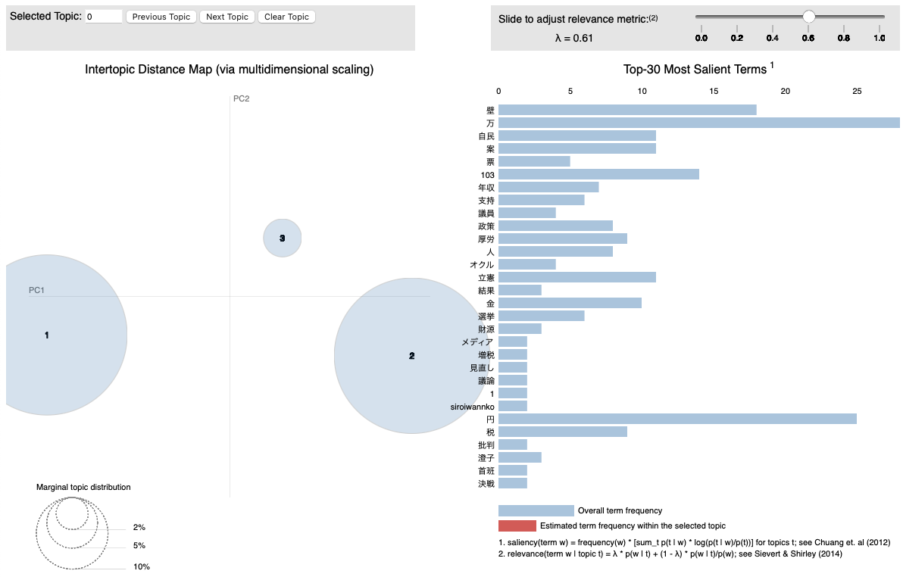
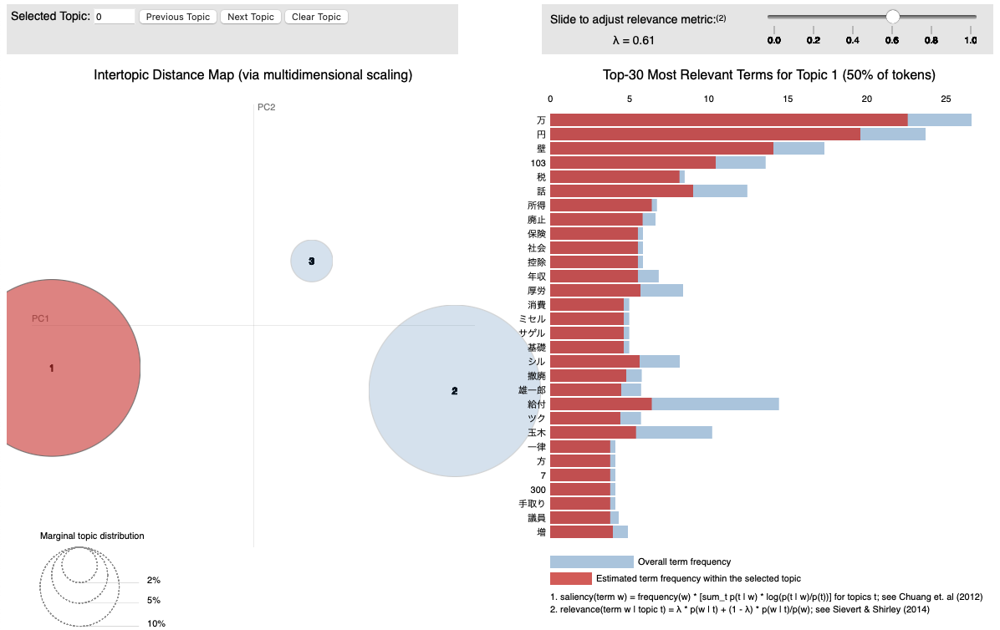
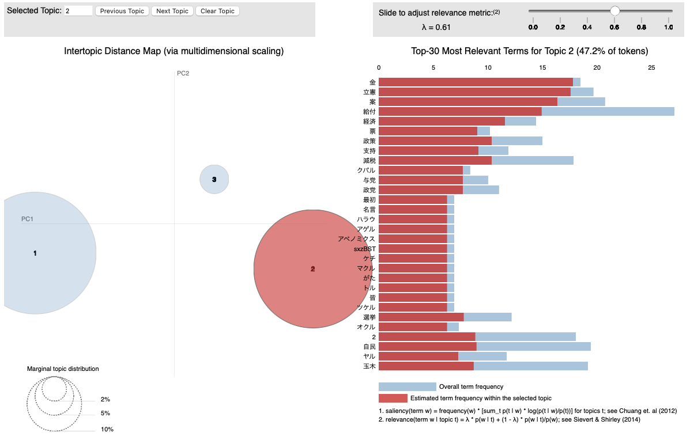

特別講義DS Ch15 自然言語処理
自然言語処理
非構造化データの分析手法として,前章では画像データを扱いました. 本章では, テキストデータを分析する手法である自然言語処理 (NPL; Natural Language Processing)について解説します.
トークン化と形態素解析
自然言語処理にも様々な手法がありますが,基本的には元の文章データをそのまま使うことはなく,文章を適切な単位に分割するなどの前処理を施します. これをトークン化といい,代表的な手法としては単語分割,品詞分割,文字分割,サブワード分割などがあります.
単語分割に関して元の文章が英語などの単語ごとに区切られている文章であれば
"This is a pen" → "This","is","a","pen"
という風に簡単に分割できますが,日本語のように単語間に空白などがない言語では特別な処理が必要になります.
また,英語であっても, 代名詞 'This', 動詞 is, 冠詞 "a", 名詞 "pen"などのように品詞分割するためには特別な処理が必要になります.
このような処理を施すために文章を最小の意味を持つ言語単位(形態素)に分割し,それぞれの品詞を識別処理を 形態素解析(Morphological Analysis)といいます.
形態素解析の基本的な手順は以下のようになります.
データの作成
PDFやホームページなどから直接処理することも可能ですが, .txtや.csv,.xlmなどの構造化データに変換しておくと処理が楽になります.
入力例文: "太陽が昇る東の空が美しい"
テキストの前処理
不要なスペースや記号を除去しテキストを処理しやすい形に整理します.
形態素への分割
文章を形態素と呼ばれる最小単位に分割します.
"太陽","が","昇る","東","の","空","が","美しい"
品詞のタグ付け
分割された形態素に品詞情報を付与します.
"太陽": 名詞
"が": 助詞
"昇る": 動詞
"東": 名詞
"の": 助詞
"空": 名詞
"が": 助詞
"美しい": 形容詞
日本語の形態素解析用のPythonパッケージとして有名なものには,MecabやJanomeがあります.
Mecab- 日本語のオープンソース形態素解析システム
- pythonのライブラリとしてはmecab-python3
janome- Pythonで書かれた日本語形態素解析器
- MecabよりインストールなどがPythonに最適化されており,インストールなどが楽
- ただし,遅いので大規模な処理では余り使われない
本資料では,以下形態素解析用ライブラリとしてMecabを利用するので
pip install mecab-python3
pip install unidic-liteを実行してインストールしておきましょう(unidic-liteは形態素解析用の日本語の辞書です.)
形態素解析の練習用のデータとして千葉商科大学のHPに掲載されている理念を利用してみます. テキスト部分をコピーして,UTF-8のcuc.txtファイルを作成し,dataフォルダに保存しましょう.

まずは,テキストデータを読み込んでみます. pandasなどを利用して読み込むこともできますが,ここではPythonの組み込みメソッドである,open()でファイルを開き,read()で読み込み,close()でファイルを閉じます.
# ファイルを開く
f = open('data/cuc.txt', encoding='utf-8')
# ファイルを読み込む
raw = f.read()
# ファイルを閉じる
f.close()
print(raw)
"""
建学の精神と理念:有用の学術と商業道徳の涵養
巣鴨高等商業学校を創設した文学博士遠藤隆吉は、自らの志とする学府創立に当たり、「建学の趣旨」を次のように述べています。
創設者 文学博士 遠藤 隆吉
...
"""pandasなどではこれらの手順を一度にまとめて行ってくれていましたが,この手法で行う場合はclose()を利用してファイルを閉じることを忘れないようにしましょう. 忘れた場合,システムのリソースが無駄に占有され,他のプログラムやソフトがファイルにアクセスできなくなるなどの問題が生じる可能性があります. 今回はファイルを読み込むだけですが,間に適用される処理が多くなるほど,open()とclose()の間の対応関係が分かりづらくなります.
そこでこのように手動でclose()を呼ぶ代わりに,Pythonではwith文を使うことで,インデントブロックを抜けた時に自動的にファイルを閉じるようにできます.with文を使うことでコードがよりシンプルかつエラーに強くなりますので,一般的にはwith文の使用が推奨されます.
with open('data/cuc.txt', encoding='utf-8') as f:
raw = f.read()
print(raw)続いて形態素解析の前の前処理を行います. (以下の形態素解析のコードなどは神戸学院大学 林坂ゼミの資料を参考にしました.)
前処理として, テキストファイルの改行,タブ,などを削除するための関数を用意します.
文字列を正規表現操作するための標準ライブラリreをimportする必要があるので注意して下さい.
import re #正規表現操作のための標準ライブラリ
def strip_CRLF_from_Text(text):
"""テキストファイルの改行,タブを削除し,形態素解析を実行
改行前後が日本語文字の場合は改行を削除する．
それ以外はスペースに置換する．
"""
# 改行前後の文字が日本語文字の場合は改行を削除する
plaintext = re.sub('([ぁ-んー]+|[ァ-ンー]+|[\\u4e00-\\u9FFF]+|[ぁ-んァ-ンー\\u4e00-\\u9FFF]+)(\n)([ぁ-んー]+|[ァ-ンー]+|[\\u4e00-\\u9FFF]+|[ぁ-んァ-ンー\\u4e00-\\u9FFF]+)',
r'\1\3',
text)
# 残った改行とタブ記号はスペースに置換する
plaintext = plaintext.replace('\n', ' ').replace('\t', ' ')
return plaintext
text = strip_CRLF_from_Text(raw)
print(text)
"""
建学の精神と理念:有用の学術と商業道徳の涵養 巣鴨高等商業学校を創設した文学博士遠藤隆吉は...
"""改行やタブが消えて, 文毎にスペースで区切られた文章が作成されました. 日本語の文章の途中で改行がある場合には,改行前後を結合して1文としてまとめられていることを確認しましょう.
続いて,前処理が施された文章をmecabを利用して形態素解析を実施してみます.
抽出する品詞はword_typesに[String]で指定します.
import MeCab as mc
def mecab_wakati(text,word_types = ["名詞","動詞","形容詞","副詞"]):
#分かち書き
t = mc.Tagger()
#word_types = [String]で指定 ("名詞","動詞","形容詞","副詞")
node = t.parseToNode(text)
sent = ""
noun = [x for x in word_types if x == "名詞"]
others = [x for x in word_types if x in [ "動詞", "形容詞","副詞"]]
while(node):
if node.surface != "": # ヘッダとフッタを除外
word_type = node.feature.split(",")[0]
if word_type in noun:
sent += node.surface + " " # node.surface は「表層形」
if word_type in others:
sent += node.feature.split(",")[6] + " " # node.feature.split(",")[6] は形態素解析結果の「原型」
node = node.next
if node is None:
break
return sent
sent = mecab_wakati(text)
print(sent)
"""
建学 精神 理念 有用 学術 商業 道徳 涵養 巣鴨 商業 学校 創設 し...
"""
#動詞だけ抽出
sent = mecab_wakati(text,['動詞'])
print('-'*10 + '\n', sent)
"""
スル スル アタル ノベル イル マサル
"""以上で文章の形態素解析は完了です.
WordCloud
広く使われる文章の可視化手法として,文章中に利用されている単語の頻度などを基準に文字の色や大きさを変えるWordCloudがあります. 先ほど形態素解析した文章を利用して,WordCloudを作成してみましょう.
まず日本語を表示するためにフォントの設定を行います.
WindwosとMacで異なりますので,自身の環境に併せてコメントアウトを外して下さい.
# フォントの保存先を指定する（環境によって書き換えてください）
font_path = "C:\\WINDOWS\\FONTS\\MEIRYO.TTC" ## Windows 版はこちら
# font_path = "/System/Library/Fonts/ヒラギノ角ゴシック W3.ttc" ## Mac 版はこちらwordcloudをimportして,画像を生成します.
pip install wordcloudをしてから以下を実行しましょう.
from wordcloud import WordCloud
wc = WordCloud(width=1000
,height=400
,background_color='white'
, regexp=r"[\w']+" #一文字を表示
,font_path=font_path).generate(sent)
wc.to_file("result/fig/cuc.png")指定した保存先("result/fig/cuc.png")に以下の画像が保存されているはずです.

WordCloudでは登場する用語の頻度で大きさや色などが強調されています. 千葉商科大学の理念では,実業,道徳,などが強調されていることが分かります.
WordCloudを作成する場合'こと','もの'などどのような文章にも頻出する用語は削除した方が望ましいです.
その場合,stopwordsに記述した単語が除外されるので,除外しましょう.
stopwords = ['こと','もの','ため']
wc = WordCloud(width=1000
,height=400
,background_color='white'
, regexp=r"[\w']+" #一文字を表示
,font_path=font_path
,stopwords=stopwords).generate(sent)
wc.to_file("result/fig/cuc2.png")これまでのコードを整理すると以下のようになります.
from wordcloud import WordCloud
import re #正規表現操作のための標準ライブラリ
import MeCab as mc
def strip_CRLF_from_Text(text):
"""テキストファイルの改行,タブを削除し,形態素解析を実行
改行前後が日本語文字の場合は改行を削除する．
それ以外はスペースに置換する．
"""
# 改行前後の文字が日本語文字の場合は改行を削除する
plaintext = re.sub('([ぁ-んー]+|[ァ-ンー]+|[\\u4e00-\\u9FFF]+|[ぁ-んァ-ンー\\u4e00-\\u9FFF]+)(\n)([ぁ-んー]+|[ァ-ンー]+|[\\u4e00-\\u9FFF]+|[ぁ-んァ-ンー\\u4e00-\\u9FFF]+)',
r'\1\3',
text)
# 残った改行とタブ記号はスペースに置換する
plaintext = plaintext.replace('\n', ' ').replace('\t', ' ')
return plaintext
def mecab_wakati(text,word_types = ["名詞","動詞","形容詞","副詞"]):
#分かち書き
t = mc.Tagger()
#word_types = [String]で指定 ("名詞","動詞","形容詞","副詞")
node = t.parseToNode(text)
sent = ""
noun = [x for x in word_types if x == "名詞"]
others = [x for x in word_types if x in [ "動詞", "形容詞","副詞"]]
while(node):
if node.surface != "": # ヘッダとフッタを除外
word_type = node.feature.split(",")[0]
if word_type in noun:
sent += node.surface + " " # node.surface は「表層形」
if word_type in others:
sent += node.feature.split(",")[6] + " " # node.feature.split(",")[6] は形態素解析結果の「原型」
node = node.next
if node is None:
break
return sent
with open('data/cuc.txt', encoding='utf-8') as f:
raw = f.read()
text = strip_CRLF_from_Text(raw)
#名詞だけ抽出
sent = mecab_wakati(text,['名詞'])
# WordCloud
# フォントの保存先を指定する（環境によって書き換えてください）
font_path = "C:\\WINDOWS\\FONTS\\MEIRYO.TTC" ## Windows 版はこちら
#font_path = "/System/Library/Fonts/ヒラギノ角ゴシック W3.ttc" ## Mac 版はこちら
stopwords = ['こと','もの','ため']
wc = WordCloud(width=1000
,height=400
,background_color='white'
, regexp=r"[\w']+" #一文字を表示
,font_path=font_path
,stopwords=stopwords).generate(sent)
wc.to_file("result/fig/cuc2.png")トピックモデル
続いて, テキスト文書の集合から潜在的なトピック(話題)を抽出するために広く利用される古典的手法である,トピックモデルを利用してみましょう.
トピックモデルでは単語の分布を使って,文章が何について話しているかを抽出します.ただし,出力は単語の集合で表されるため,そのトピックが何に関する話題かは利用者が判断する必要があります.
- 例: トピックA: ｢経済｣｢市場｣｢投資｣ ← 経済に関するトピック
- 例: トピックB: ｢ねこ｣｢いぬ｣｢ペット｣ ← ペットに関するトピック と解釈できるトピックモデルにもいくつかの手法がありますが,最も一般的な実装手法の一つにLDA（Latent Dirichlet Allocation: 潜在的ディリクレ配分法）があります. LDA以外にもPLSA（Probabilistic Latent Semantic Analysis）などがあります.
LDAでは各文章をトピックの混合分布として表現します.
- 例: 文章1: トピックA 0.5, トピックB 0.4, トピックD 0.1
- 例: 文章2: トピックA 0.6, トピックE 0.3LDAでは,各文書のトピック分布と各トピックの単語分布にディリクレ分布を使用します.ディリクレ分布は,確率の分布に対する分布（事前分布）として使われ,特にトピックの混合率が異なる多様な文書集合に対応できます.この過程では「ギブスサンプリング」や「変分ベイズ法」といった推論手法を使い,文書全体のトピックと単語の分布が収束するまで反復的に計算されます.ギブスサンプリングや事後分布,事前分布などに関しては, 一般化線形モデルの章で扱っています.
X(Twitter) APIを用いたデータの取得
自然言語解析では,ワードクラウドの事例のように,まとまった文章を分析する場合もありますが,X(旧:Twitter)のつぶやきのように,短い文章の集合を扱う場合もあります. ここでは, TwitterのAPIを利用して,つぶやきを取得し,そのつぶやきに関して分析してみましょう.
API（Application Programming Interface）とは,ソフトウェア同士がデータや機能をやりとりするための「窓口」のようなものです.開発者はAPIを通じて,他のサービスやアプリケーションの機能を利用できるため,複雑な処理を簡単に実行したり,他のサービスと連携することができます.
APIの利用に関わる主な通信技術には, HTTP/HTTPSプロトコル, REST（Representational State Transfer）, SOAP（Simple Object Access Protocol）,およびWebSocketなどがあり,それぞれ異なる目的や特徴を持っています.
X.APIはRESTアーキテクチャで提供されて降りその概要は以下のとおりです.
HTTP/HTTPSプロトコル
APIの通信は通常,ウェブブラウザと同様にHTTPやHTTPSプロトコルを使って行われます.HTTPSは通信を暗号化し,セキュリティを確保するため,多くのAPIで推奨されます.
REST（Representational State Transfer）
RESTは,HTTPを利用してリソース（データや機能）にアクセスするための設計原則で,最も広く使われるAPI通信の形式です.REST APIでは,GET,POST,PUT,DELETEなどのHTTPメソッドを使ってデータを取得,作成,更新,削除します.シンプルかつ軽量なため,モバイルアプリやWebサービスでの利用に適しています.
GET
概要: リソース（データ）の取得に使用される.
例: ユーザー情報を取得する場合,GET /users/123のように送信すると,ユーザーIDが123のデータが返されます.
特徴: サーバー上のデータを変更しない「読み取り専用」操作.
POST
概要: 新しいリソースを作成するために使用される.
例: 新しい記事を投稿する場合,POST /articlesで記事データをサーバーに送信すると,新しい記事が作成されます.
特徴: サーバーにデータを送信して新しいエントリを追加する操作.
PUT
概要: 既存のリソースを更新するために使用される.
例: 記事の内容を変更する場合,PUT /articles/456で新しいデータを送信し,記事ID456の内容を更新します.
特徴: 指定されたリソース全体を置き換える操作.
DELETE
概要: リソースの削除に使用される.
例: 記事を削除する場合,DELETE /articles/456を実行すると,記事ID456が削除されます.
特徴: サーバーからリソースを取り除く操作.
REST APIでデータをやりとりする際のデータ形式として,JSON（JavaScript Object Notation）が一般的に使用されます.JSONはシンプルで軽量なテキスト形式で,読みやすく,プログラミング言語間の互換性も高いため,多くのAPIで標準的なフォーマットとして採用されています.
{
"id": 123,
"name": "John Doe",
"email": "johndoe@example.com"
}これから,X.APIにGETメソッドを利用し呟きを取得します.APIから返答されるデータはjsonですが,今回はJSONを直接触らず,これまでに扱ってきたCSVに変換します. APIを操作するためのライブラリrequestsをinstallしておきましょう.
pip install requests以下の処理はX APIの無料の範囲で行っていますので,誰でも再現できますが, アカウントの登録など手間が多く,また無料版のAPIでは15分に一回しかリクエストが送れないため,データの取得には最低でも15分かかります. 社長と社名が変わってからAPI機能が物凄く使いにくくなっており,値段も高額になっています.まともに研究で利用しようと思うと月5000ドルのAPI使用料を払う必要があります.2000ドルはこの講義のために払うのが難しいので,月200ドルのBasicプランであれば利用できるアカウントは準備しますが,Basicプランでは過去7日間の呟きしか取得できないので注意しましょう.

研究で利用する人以外は完成したこちらのデータをダウンロードして利用しましょう.
XのAPIを利用するには,認証トークン(Bearer Token)を発行する必要があります.認証トークンとはX.APIにアクセスするための認証情報です.
Xのデベロッパー用ページからまずはサインアップします.
今回は無料版を利用するので, Sign up for Free Accountをクリックしましょう.

利用目的を尋ねられるので,250文字以上の英文で回答しましょう. その他のチェックを入れて,次に進みます.

左のメニューのDashboardに表示されているProject APPのKeys and Tokens(鍵)ボタンを押します.
Bearer TokenのRegenerateをクリックするとBearer Tokenが表示されます. クリップボードにコピーしてどこかに保存しましょう.このトークンは一度しか表示されません.忘れた場合は別のトークンを再生成する必要があるので注意しましょう.

取得したトークンを利用してプログラムを書いていきます.
まずは認証トークンを設定します.先ほど取得した認証トークンをbearer_tokenという変数に格納し,API呼び出し時に利用します(YOUR_BEARER_TOKENの部分を書き換えましょう.)
import requests #HTTPリクエストを送るためのライブラリです.このライブラリを使ってAPIにアクセスします.
import pandas as pd
# 認証トークン
bearer_token = 'YOUR_BEARER_TOKEN'X.APIの「検索」機能にアクセスするためのURLを指定します. ここでは,最近のツイートを取得するエンドポイントsearch/recentを指定しています. search/recentでは直近7日間のつぶやきを取得できます. それ以上過去のつぶやきはProアカウントでしか取得することができません.
# Twitter APIのエンドポイントURL
search_url = "https://api.x.com/2/tweets/search/recent"取得対象のキーワード（検索ワード）を指定します.このコードでは「国民民主党」に関するツイートを検索します.一つのプログラムで複数のワードを取得することも可能ですが,X.APIの無料版では,15分に1回しかリクエストが送れないため,複数のワードで検索するにはコード内で15分間待機する機能を入れる必要があるので今回は一つだけ検索してみましょう.
tweet_countで各検索で取得するツイート数の上限です.無料版のAPI機能では, 1ヶ月あたり100ツイートのみアクセスできるので,50にすると1ヶ月に2回アクセスできます. 1度失敗すると数を大幅に減らすか,1ヶ月待つか,課金する必要があるので注意して下さい.
# 検索ワード
word = "国民民主党"
tweet_count = 50認証トークンをリクエストヘッダーに追加するための関数bearer_oauth()を作成します.この関数で設定されたヘッダーを使って,X.APIへのリクエストが認証されます.
def bearer_oauth(r):
r.headers["Authorization"] = f"Bearer {bearer_token}"
r.headers["User-Agent"] = "v2RecentSearchPython"
return r指定されたURLにGETリクエストを送信し,APIのレスポンスを取得します.response.status_code != 200でAPIからエラーが返された場合,例外を発生させます.正常なレスポンスを受け取った場合,JSON形式でデータを返します.
def connect_to_endpoint(url, params):
response = requests.get(url, auth=bearer_oauth, params=params)
response.encoding = response.apparent_encoding
if response.status_code != 200:
raise Exception(response.status_code, response.text)
return response.json()特定の検索ワードに関するツイートを取得します. 検索パラメータをlang:jaに設定し,日本語のツイートに限定しています.
def fetch_tweets_for_party(party):
query_params = {
"query": f"{party} lang:ja",
"max_results": tweet_count
}
json_response = connect_to_endpoint(search_url, query_params)
tweets_data = json_response.get("data", [])
return [tweet["text"] for tweet in tweets_data]作成した関数を利用して,つぶやきを取得します.
def main():
all_tweets = []
print(f"{word}のツイートを取得中...")
tweets = fetch_tweets_for_party(word)
for tweet in tweets:
all_tweets.append({"Word": word, "Tweet": tweet})
if all_tweets:
df = pd.DataFrame(all_tweets)
df.to_csv("tweets.csv", index=False, encoding="utf-8-sig")
print("tweets.csvにデータを書き出しました。")
else:
print("取得したデータがありません。")コード全体は以下のようになります.
import requests
import pandas as pd
# 認証トークン
bearer_token = 'YOUR_BEARER_TOKEN'
# Twitter APIのエンドポイントURL
search_url = "https://api.x.com/2/tweets/search/recent"
# 検索ワード
word = "国民民主党"
# 各政党ごとに取得する件数
tweet_count = 50
def bearer_oauth(r):
"""
Method required by bearer token authentication.
"""
r.headers["Authorization"] = f"Bearer {bearer_token}"
r.headers["User-Agent"] = "v2RecentSearchPython"
return r
def connect_to_endpoint(url, params):
response = requests.get(url, auth=bearer_oauth, params=params)
response.encoding = response.apparent_encoding
if response.status_code != 200:
raise Exception(response.status_code, response.text)
return response.json()
def fetch_tweets_for_party(party):
# パラメータの設定
query_params = {
"query": f"{party} lang:ja",
"max_results": tweet_count # APIの制限で一度に取得できるのは最大100件まで
}
# エンドポイントに接続してデータを取得
json_response = connect_to_endpoint(search_url, query_params)
tweets_data = json_response.get("data", [])
return [tweet["text"] for tweet in tweets_data]
def main():
all_tweets = []
# 各政党ごとのツイートを取得してデータを集約
print(f"{word}のツイートを取得中...")
tweets = fetch_tweets_for_party(party)
for tweet in tweets:
all_tweets.append({"Word": party, "Tweet": tweet})
# データをDataFrameに変換してCSVに書き出し
if all_tweets:
df = pd.DataFrame(all_tweets)
df.to_csv("tweets.csv", index=False, encoding="utf-8-sig")
print("tweets.csvにデータを書き出しました。")
else:
print("取得したデータがありません。")
if __name__ == "__main__":
main()このコードで取得した50件の呟きをまとめたデータがこちらになります.
以下,このデータを利用して分析を行ってみましょう.
トピックモデル実践
LDAによるトピックモデルを利用するためにライブラリgensimと,LDAの可視化用のライブラリpyLDAvisをインストールしましょう.
pip install gensim pyLDAvisimportと形態素解析のための関数を定義しておきます.
URLは上手く形態素解析できないので,URLを削除する関数も新たに定義しています.
import pandas as pd
import MeCab as mc
import re
from gensim.corpora.dictionary import Dictionary
from gensim.models import LdaModel
import pyLDAvis
import pyLDAvis.gensim_models as gensimvis
import pyLDAvis.gensim
def strip_CRLF_from_Text(text):
"""テキストファイルの改行,タブを削除し,形態素解析を実行
改行前後が日本語文字の場合は改行を削除する．
それ以外はスペースに置換する．
"""
# 改行前後の文字が日本語文字の場合は改行を削除する
plaintext = re.sub('([ぁ-んー]+|[ァ-ンー]+|[\\u4e00-\\u9FFF]+|[ぁ-んァ-ンー\\u4e00-\\u9FFF]+)(\n)([ぁ-んー]+|[ァ-ンー]+|[\\u4e00-\\u9FFF]+|[ぁ-んァ-ンー\\u4e00-\\u9FFF]+)',
r'\1\3',
text)
# 残った改行とタブ記号はスペースに置換する
plaintext = plaintext.replace('\n', ' ').replace('\t', ' ')
return plaintext
def mecab_wakati(text,word_types = ["名詞","動詞","形容詞","副詞"]):
#分かち書き
t = mc.Tagger()
#word_types = [String]で指定 ("名詞","動詞","形容詞","副詞")
node = t.parseToNode(text)
sent = ""
noun = [x for x in word_types if x == "名詞"]
others = [x for x in word_types if x in [ "動詞", "形容詞","副詞"]]
while(node):
if node.surface != "": # ヘッダとフッタを除外
word_type = node.feature.split(",")[0]
if word_type in noun:
sent += node.surface + " " # node.surface は「表層形」
if word_type in others:
sent += node.feature.split(",")[6] + " " # node.feature.split(",")[6] は形態素解析結果の「原型」
node = node.next
if node is None:
break
return sent
def remove_urls(text):
# URLを検出する正規表現パターン
url_pattern = r'http[s]?://(?:[a-zA-Z]|[0-9]|[$-_@.&+]|[!*\\(\\),]|(?:%[0-9a-fA-F][0-9a-fA-F]))+'
# URLを空文字に置換して除外
return re.sub(url_pattern, '', text)データを読み込みます(このデータを取得した次の日に国民民主党の党首の不倫騒動があったので,そのつぶやきが取れていれば面白かったのですが,残念です.)
トークナイズ(形態素解析),と削除文字の指定,削除までをまとめて行います. ここで,指定している削除文字は一度結果を見たあとで追加したものです.実際の分析では,結果とコードを何往復かして,調整する作業が必要になります.
形態素解析の前にremove_urls()を適用していることに注意して下さい.
#データの読み込み
df = pd.read_csv('data/tweets.csv')
#国民民主党のリアクションシートだけのデータを作る
akagi = df['Tweet']
#トークナイズ
txt = [mecab_wakati(strip_CRLF_from_Text(remove_urls(x)),["名詞","動詞"]).split(' ') for x in akagi]
#削除文字の指定
stopwords = ['オモウ','イウ','イル','アル','こと']
txt = [[x for x in t if x not in stopwords] for t in txt]前回扱った｢千葉商科大学の理念｣は単一のテキストデータでしたが,今回の分析の対象は50件のつぶやきです. このような複数のテキストを扱う際には,前処理として出現頻度による単語の削除がよく用いられます. 殆ど全てのテキストに出てくるような単語(数字や副詞などが多い)は特徴を抽出する際には役に立たないので削除したほうが良い場合があります. また,反対に出現が非常に稀な単語,造語や個人名なども削除したほうがいい場合があります.
実際の分析では,どの程度の頻度を基準とするかを結果を見ながら調整する必要がありますが,今回は練習なので2文書未満にしか出現しない単語と,全体の50%以上に出現する単語を削除しています.
実装はdictionaryクラスのfilter_extremes()メソッドを利用しています.
#辞書の作成
dictionary = Dictionary(txt)
#出現がx文書に満たない単語と、y%以上の文書に出現する単語を極端と見做し削除する
x =2
y =0.5
dictionary.filter_extremes(no_below=x,no_above=y)
# LdaModelが読み込めるBoW形式に変換
corpus = [dictionary.doc2bow(x) for x in txt]
print(f"Number of unique tokens: {len(dictionary)}")
print(f"Number of documents: {len(corpus)}")
"""
Number of unique tokens: 200
Number of documents: 50
"""LDAでは,事前に抽出するトピック数を決めることができます.こちらも実際には調整が必要ですが,今回は決め打ちで3としています.
LDAの結果はpyLDAvisによってhtml形式で出力されます.
#3トピックを抽出
num_topics =3
lda = LdaModel(corpus, id2word =dictionary, num_topics=num_topics, alpha=0.01)
#トピックごとに上位5単語を表示
df =pd.DataFrame()
for t in range(num_topics):
word=[]
for i, prob in lda.get_topic_terms(t, topn=5):
word.append(dictionary.id2token[int(i)])
_ = pd.DataFrame([word],index=[f'topic{t+1}'])
df = df._append(_)
print(df.T)
"""
topic1 topic2 topic3
0 金 万 増税
1 立憲 円 壁
2 案 壁 メディア
3 給付 103 自民
4 経済 話 結果
"""
#可視化
#PyLDAvisの実装
visualisation = pyLDAvis.gensim.prepare(lda, corpus, dictionary)
pyLDAvis.save_html(visualisation, 'result/LDA_Visualization.html')今回は3つのトピックではいずれも103万円の壁の話をしていますがtopic1では立憲民主党の対案としての低所得者への給付の話題,topic3ではメディアや自民党に対する批判などの話題
が抽出されました. あまりはっきりしていませんが,もう少しつぶやきの数を増やすと分かりやすくなるかもしれません.
出力されたLDA_Visualization.htmlをクリックするとブラウザ上で確認することができます.

左側には主成分分析による第1主成分,第2主成分上にマッピングされたトピックの集合が可視化されており,右側には全体のトピックにおける単語の分布が表示されています.
それぞれのトピックをクリックすることでトピックごとの単語の分布が表示されます.
 
右上のバーで調整できるラムダは,トピックモデルの結果を調整するためのパラメータです.ラムダの値が大きいほど,他のトピックにも出現する一般的な単語を除外し,トピック内の単語の特徴を強調します. 値を変化させてどのようにトピックの分布が変わるかを確認してみましょう.
コード全体は以下のようになっています.
import pandas as pd
import MeCab as mc
import re
from gensim.corpora.dictionary import Dictionary
from gensim.models import LdaModel
import pyLDAvis
import pyLDAvis.gensim_models as gensimvis
import pyLDAvis.gensim
def strip_CRLF_from_Text(text):
"""テキストファイルの改行,タブを削除し,形態素解析を実行
改行前後が日本語文字の場合は改行を削除する．
それ以外はスペースに置換する．
"""
# 改行前後の文字が日本語文字の場合は改行を削除する
plaintext = re.sub('([ぁ-んー]+|[ァ-ンー]+|[\\u4e00-\\u9FFF]+|[ぁ-んァ-ンー\\u4e00-\\u9FFF]+)(\n)([ぁ-んー]+|[ァ-ンー]+|[\\u4e00-\\u9FFF]+|[ぁ-んァ-ンー\\u4e00-\\u9FFF]+)',
r'\1\3',
text)
# 残った改行とタブ記号はスペースに置換する
plaintext = plaintext.replace('\n', ' ').replace('\t', ' ')
return plaintext
def mecab_wakati(text,word_types = ["名詞","動詞","形容詞","副詞"]):
#分かち書き
t = mc.Tagger()
#word_types = [String]で指定 ("名詞","動詞","形容詞","副詞")
node = t.parseToNode(text)
sent = ""
noun = [x for x in word_types if x == "名詞"]
others = [x for x in word_types if x in [ "動詞", "形容詞","副詞"]]
while(node):
if node.surface != "": # ヘッダとフッタを除外
word_type = node.feature.split(",")[0]
if word_type in noun:
sent += node.surface + " " # node.surface は「表層形」
if word_type in others:
sent += node.feature.split(",")[6] + " " # node.feature.split(",")[6] は形態素解析結果の「原型」
node = node.next
if node is None:
break
return sent
def remove_urls(text):
# URLを検出する正規表現パターン
url_pattern = r'http[s]?://(?:[a-zA-Z]|[0-9]|[$-_@.&+]|[!*\\(\\),]|(?:%[0-9a-fA-F][0-9a-fA-F]))+'
# URLを空文字に置換して除外
return re.sub(url_pattern, '', text)
#------------------------------------------------------------------
# ↑ ここまで,関数定義
# ↓ ここから,データ処理
#------------------------------------------------------------------
#データの読み込み
df = pd.read_csv('data/tweets.csv')
#国民民主党のリアクションシートだけのデータを作る
akagi = df[df['Word'] == '自民党']['Tweet']
#トークナイズ
txt = [mecab_wakati(strip_CRLF_from_Text(remove_urls(x)),["名詞","動詞"]).split(' ') for x in akagi]
#削除文字の指定
stopwords = ['オモウ','イウ','イル','アル','こと']
txt = [[x for x in t if x not in stopwords] for t in txt]
#辞書の作成
dictionary = Dictionary(txt)
#出現がx文書に満たない単語と、y%以上の文書に出現する単語を極端と見做し削除する
x =2
y =0.5
dictionary.filter_extremes(no_below=x,no_above=y)
# LdaModelが読み込めるBoW形式に変換
corpus = [dictionary.doc2bow(x) for x in txt]
print(f"Number of unique tokens: {len(dictionary)}")
print(f"Number of documents: {len(corpus)}")
#3トピックを抽出
num_topics =3
lda = LdaModel(corpus, id2word =dictionary, num_topics=num_topics, alpha=0.01)
#トピックごとに上位5単語を表示
df =pd.DataFrame()
for t in range(num_topics):
word=[]
for i, prob in lda.get_topic_terms(t, topn=5):
word.append(dictionary.id2token[int(i)])
_ = pd.DataFrame([word],index=[f'topic{t+1}'])
df = df._append(_)
print(df.T)
#可視化
#PyLDAvisの実装
visualisation = pyLDAvis.gensim.prepare(lda, corpus, dictionary)
pyLDAvis.save_html(visualisation, 'result/LDA_Visualization.html')ニューラル言語モデル
トピックモデルでは,単語の分布を解釈していましたが,文章自体の意味を扱っているわけでは有りません. 文章や単語の意味を利用した分析手法について見てみましょう.
本節では, 2018年にGoogleが発表したニューラル言語モデルのであるBERT(Bidirectional Encoder Representations from Transformers)を利用して見ましょう(なお,BERTの後継にELECTRAがありますが,資料の更新ができていません.)
BERTはなどのニューラル言語モデルは事前学習とファインチューニングという二段階の学習を行うのが一般的です.
- 事前学習
(日本語など)言語全般に関して大規模なテキストコーパス(Wikipediaなど)で学習 こちらのモデルがGoogleによって公開されている(ライブラリとして利用可能)
- ファインチューニング
事前学習済みのBERTモデルをタスク(穴埋め,ラベリング,校正などの用途)によって追加学習させる. タスクに関連した新たなデータセットが必要 ラベリングをするのであれば,ラベル付けされた教師データが必要
BERTはコーパスを用いてどのような学習を行っているのでしょうか. 基本的にBERTが行っているのは文章の穴埋め精度を高めるための学習です.
- 私はりんごを【MASK】
という一部が隠れた文章があったとき, 【MASK】の部分に入る文字列の確率計算をしています. 通常,文章の【MASK】部分に入る文章は,それぞれ確率が異なります.
例えば,上の文章では【MASK】部分に｢行う｣｢走る｣などの動詞が続く確率よりも｢食べる｣｢買う｣｢調理する｣などの動詞が続く確率が高いと考えられます.
- 私はりんごを行った ← 確率低い
- 私はりんごを食べた ← 確率高い
人間は過去の学習から,このような確率をなんとなく判断できますが,BERTはコーパスから教師あり学習をして,あらゆる語彙の連なりやすさの確率を計算しています.
$$𝑃(食べた│私はりんごを)=\frac{(コーパス中の頻度(私はりんごを食べた))}{(コーパス中の頻度(私はりんごを))}$$
$$𝑃(食べた│私はりんごを)= \frac{(コーパス中の頻度(私はりんごを行った))}{(コーパス中の頻度(私はりんごを))}$$
大抵はすでにこのような事前学習が行われたモデルを利用し,必要があればファインチューニングをそれぞれの利用者が行います. 日本語で有名な学習済みモデルには東北大がWikipediaの日本語記事ので学習したモデル('tohoku-nlp/bert-base-japanese-whole-word-masking)などがあります.
BERTのファインチューニングのためには,目的に応じたデータセットが必要となります.このデータは,トピックモデルなどで扱ってきたような分析用のデータではなく,学習用のデータです.
- データセット
日本語データセットとして良く利用されるものは以下のとおりです.
Twitterの商品に関するポジティブ,ネガティブ,ニュートラルのラベリングデータ
日本語を48の勘定に分類
安らぎ、楽しさ親しみ、尊敬・尊さ、感謝、気持ちが良い、誇らしい、感動、喜び、悲しさ、寂しさ不満、切なさ、苦しさ、不安、憂鬱、辛さ、好き、嫌悪、恥ずかしい、焦り、驚き、怒り、幸福感、恨み、恐れ（恐縮等の意味で）、恐怖、悔しさ、祝う気持ち、困惑、きまずさ、興奮、悩み、願望、失望、あわれみ、見下し、謝罪、ためらい、不快、怠さ、あきれ、心配、緊張、妬み、憎い、残念、情けない、穏やか
ニュース記事をサイト別/ジャンル別に分類
トピックニュース - Sports Watch - ITライフハック - 家電チャンネル - MOVIE ENTER - 独女通信 - エスマックス - livedoor HOMME - Peachy
有価証券報告書ネガポジデータセット
TIS株式会社が公開している上場企業の有価証券報告書を用いて作成されたマルチラベルのネガポジデータセット
ネガティブ, ポジティブ, ニュートラルの3ラベル
BERTをどのように利用するかは,様々な応用がありえますが, 良く利用される事例は以下のようなものです.
BERTの利用例
文章の穴埋め（Masked Language Model, MLM）
トークンを利用して文中の一部を隠し,その隠れた部分を予測します.たとえば「今日は【MASK】に行く」という文が与えられた場合,BERTは文脈に基づいて【MASK】部分が「学校」「会社」などになると予測します.この機能により,文章の補完やオートコンプリート機能に利用できます.
文章分類
BERTは感情分析や話題の分類などの文章分類タスクで広く使われています.例えば,商品レビューやSNSの投稿をポジティブ・ネガティブといった感情ラベルに分類することで,マーケティング分析やレコメンドシステムの精度を向上させます.また,ニュース記事をカテゴリに分けるなど,文書分類にも応用されています.
マルチラベル文章分類
一部の文章は,複数の感情やカテゴリに属することがあり,BERTは「ポジティブかつネガティブ」のように複数のラベルを付与するマルチラベル分類も可能です.これにより,特定のジャンルに限らない複数の特徴や感情を同時に判別し,より高度な文章分析を可能にします.たとえば,レビューが「高評価だが高価」といった異なる側面を含む場合も,それぞれの特徴を捉えることができます.
固有表現抽出（Named Entity Recognition, NER）
BERTを用いて文章から特定の固有名詞を抽出できます.例えば,文中の「人名」「組織名」「地名」などの固有表現を検出し,ビジネスや医療,自然言語処理の分野で多用されます.ニュース記事から企業名や国名を抽出して情報整理を行ったり,顧客対応で企業名や製品名を抽出して対応を迅速化するなどの応用が可能です.
文章校正
BERTを使った校正機能は,文法チェックやスペルチェックに利用され,Grammarlyのようなサービスに応用できます.文脈を考慮した校正が可能なため,単なる誤字脱字の修正だけでなく,不自然な表現を検知し,より適切な言い回しに修正することも可能です.
データの可視化と類似文章検索
BERTのエンコーディング機能を使うと,文章をベクトル化し,意味の似た文章を数値的に比較できるようになります.これにより,多次元空間における文章の類似性が計算でき,例えばPCAやt-SNEで次元を減らし,クラスタリングを行ってデータを可視化できます.類似した内容の文書を自動でグループ分けしたり,ユーザーが検索したい文に近い内容の文書を瞬時に探すといった検索機能にも利用されます.
マルチラベル分類
マルチラベル分類とは選択肢の中から復数のカテゴリーを選ぶ分類手法です.
今回は有価証券報告書データを利用して[ネガティブ,ニュートラル,ポジティブ]に分類します.
ネガティブと判定されると[1,0,0],ニュートラルと判定されると[0,1,0]のようなベクトルが返ってきます.
また,一つの文章にネガティブな内容とポジティブな内容両方が含まれている場合には[1,0,1]のような結果となります.
GPU計算とCPU計算
PCにおける計算は通常CPUによって行われます. これまでに実行してきたPythonプログラムは全てCPUを用いた計算を行っていました(画像処理ではGPU計算も可能なプログラムになっていました.) 一方でGPU(Graphics Processing Unit,画像処理装置,いわゆるグラボ)を利用してプログラムを計算することも可能です. ニューラルネットワークモデルは,その特性から単純な計算を大量に行うためGPUを用いた並列計算が行われることが多いです.

これからBERTを利用してマルチラベル分類を実施してみます. ただし,ニューラルモデルを利用するにあたって,学生それぞれのノートPCでGPU計算の環境を構築することが困難なので, Googleの提供するオンライン上のPythonの実行環境であるColaboratoryを利用します.
まずは,Googleのサービスを利用するためのGoogleアカウントを作成しましょう(既にある人はスキップ)

プログラムやデータなどはGoogleのクラウドストレージであるGoogle Driveに保存されます. Google Drive上に作業用ディレクトリを作りましょう.

新規作成からフォルダを作成し,適当な名前をつけましょう. フォルダ内にはデータを保存するフォルダdataを作成しておきましょう.
作成したフォルダにプログラムやデータをドラッグアンドドロップすることでアップロードできます.
実際にコードやデータを利用する前にGoogle Drive上でColaboratoryのファイルを扱えるようにしましょう.
右下+ボタンをクリックして,Colaboratoryのアドオンを検索し,インストールしましょう.

インストールが完了したら一度ページを再読み込みしましょう.
今回はマルチラベル用のプログラムを新規作成します. フォルダの何もない部分を右クリックして,その他から,Colaboratoryのファイル(拡張子.ipynb)を作成しましょう.

作成したファイルをダブルクリックするとColaboratoryが起動します. まずは,右上の設定からGPU計算が可能なように設定を変更しましょう.

Colaboratoryは対話型環境になっており, プログラムを書いてブロックごとに実行します. 各ブロックの左側にある再生ボタンを押すか,Runtimeから実行方法を選択して実行します. Run allをクリックすると全てのブロックが上から順に実行されます.

!に続けて入力することでシェルコマンドも実行可能です.
最初に,今回のプログラムで必要となるライブラリをインストールしてみましょう.なお,以下のマルチラベル文章分類に関するコードは,BERTによる自然言語処理入門 オーム社を参考にしています.
#ライブラリのインストール
!pip install transformers==4.18.0 fugashi==1.1.0 ipadic==1.0.0 pytorch_lightningまずは,学習済みのモデルを読み込みます. ニューラルモデルに関するこれらのコードは全て理解しようと思うと,膨大な時間が必要になります. なので,ここでは取り敢えずそれぞれの部分で何をやっているのかを大雑把に把握するようにしましょう.
import random
import glob
import json
from tqdm import tqdm
import torch
from torch.utils.data import DataLoader
from transformers import BertJapaneseTokenizer, BertModel
import pytorch_lightning as pl
# 日本語の学習モデル
MODEL_NAME = 'tohoku-nlp/bert-base-japanese-whole-word-masking'
# ------------------------------------------------------------------
# マルチラベル文章分類用のクラス
# ------------------------------------------------------------------
class BertForSequenceClassificationMultiLabel(torch.nn.Module):
def __init__(self, model_name, num_labels):
super().__init__()
# BertModelのロード
self.bert = BertModel.from_pretrained(model_name)
# 線形変換を初期化しておく
self.linear = torch.nn.Linear(
self.bert.config.hidden_size, num_labels
)
def forward(
self,
input_ids=None,
attention_mask=None,
token_type_ids=None,
labels=None
):
# データを入力しBERTの最終層の出力を得る。
bert_output = self.bert(
input_ids=input_ids,
attention_mask=attention_mask,
token_type_ids=token_type_ids)
last_hidden_state = bert_output.last_hidden_state
# [PAD]以外のトークンで隠れ状態の平均をとる
averaged_hidden_state = \
(last_hidden_state*attention_mask.unsqueeze(-1)).sum(1) \
/ attention_mask.sum(1, keepdim=True)
# 線形変換
scores = self.linear(averaged_hidden_state)
# 出力の形式を整える。
output = {'logits': scores}
# labelsが入力に含まれていたら、損失を計算し出力する。
if labels is not None:
loss = torch.nn.BCEWithLogitsLoss()(scores, labels.float())
output['loss'] = loss
# 属性でアクセスできるようにする。
output = type('bert_output', (object,), output)
return output
# モデルとトークナイザのロード
# num_label:カテゴリー数
tokenizer = BertJapaneseTokenizer.from_pretrained(MODEL_NAME)
bert_scml = BertForSequenceClassificationMultiLabel(
MODEL_NAME, num_labels=2
)
bert_scml = bert_scml.cuda()これでBertのマルチラベル変換用のモデルが利用できるようになりました. 続いて,ファインチューニングを実施します.
今回は先述のTIS株式会社による上場企業の有価証券報告書を用いて作成されたマルチラベルのネガポジデータセット chABSA-datasetを利用します.
データとしてはjsonでそれぞれの文章が,ネガティブなのか,ポジティブなのかが記録されています.
# データのダウンロード
!wget https://s3-ap-northeast-1.amazonaws.com/dev.tech-sketch.jp/chakki/public/chABSA-dataset.zip
# データの解凍
!unzip chABSA-dataset.zip
# chABSA-dataset
# - xxx.json
# の形で保存
data = json.load(open('chABSA-dataset/e00030_ann.json'))
print( data['sentences'][0] )
#データから文章とカテゴリーを抜き出して整形しておく
category_id = {'negative':0, 'neutral':1 , 'positive':2}
dataset = []
for file in glob.glob('chABSA-dataset/*.json'):
data = json.load(open(file))
# 各データから文章（text）を抜き出し、ラベル（'labels'）を作成
for sentence in data['sentences']:
text = sentence['sentence']
labels = [0,0,0]
for opinion in sentence['opinions']:
labels[category_id[opinion['polarity']]] = 1
sample = {'text': text, 'labels': labels}
dataset.append(sample)
print(dataset[0])
"""
{'text': '当連結会計年度（平成28年１月１日から平成29年３月31日まで）におけるわが国経済は...
"""printによる表示結果は省略していますが,もとのデータセットが表示されているかと思います.
続いて,文章をトークン化した後,学習用(60%),検証用(20%),テスト用(20%)にそれぞれ分割します. 文章のトークン化には,Bertのトークナイザを利用します.
# トークナイザのロード
tokenizer = BertJapaneseTokenizer.from_pretrained(MODEL_NAME)
# 各データの形式を整える
max_length = 128
dataset_for_loader = []
for sample in dataset:
text = sample['text']
labels = sample['labels']
encoding = tokenizer(
text,
max_length=max_length,
padding='max_length',
truncation=True
)
encoding['labels'] = labels
encoding = { k: torch.tensor(v) for k, v in encoding.items() }
dataset_for_loader.append(encoding)
# データセットの分割
random.shuffle(dataset_for_loader)
n = len(dataset_for_loader)
n_train = int(0.6*n)
n_val = int(0.2*n)
dataset_train = dataset_for_loader[:n_train] # 学習データ
dataset_val = dataset_for_loader[n_train:n_train+n_val] # 検証データ
dataset_test = dataset_for_loader[n_train+n_val:] # テストデータ
# データセットからデータローダを作成
dataloader_train = DataLoader(
dataset_train, batch_size=32, shuffle=True
)
dataloader_val = DataLoader(dataset_val, batch_size=256)
dataloader_test = DataLoader(dataset_test, batch_size=256)データの準備が整ったので,ファインチューニングを行います. 今回はエポック数を5として,決め打ちで行っていますが,
実際に研究等で使用する場合には前章に習って過学習の確認や学習率(lr)の調整などを行いましょう.
以下の処理は,およそ10分程度かかるので,時間的に余裕のあるときに実行して下さい.
class BertForSequenceClassificationMultiLabel_pl(pl.LightningModule):
def __init__(self, model_name, num_labels, lr):
super().__init__()
self.save_hyperparameters()
self.bert_scml = BertForSequenceClassificationMultiLabel(
model_name, num_labels=num_labels
)
def training_step(self, batch, batch_idx):
output = self.bert_scml(**batch)
loss = output.loss
self.log('train_loss', loss)
return loss
def validation_step(self, batch, batch_idx):
output = self.bert_scml(**batch)
val_loss = output.loss
self.log('val_loss', val_loss)
def test_step(self, batch, batch_idx):
labels = batch.pop('labels')
output = self.bert_scml(**batch)
scores = output.logits
labels_predicted = ( scores > 0 ).int()
num_correct = ( labels_predicted == labels ).all(-1).sum().item()
accuracy = num_correct/scores.size(0)
self.log('accuracy', accuracy)
def configure_optimizers(self):
return torch.optim.Adam(self.parameters(), lr=self.hparams.lr)
checkpoint = pl.callbacks.ModelCheckpoint(
monitor='val_loss',
mode='min',
save_top_k=1,
save_weights_only=True,
dirpath='model/',
)
trainer = pl.Trainer(
max_epochs=5,
callbacks = [checkpoint]
)
model = BertForSequenceClassificationMultiLabel_pl(
MODEL_NAME,
num_labels=3,
lr=1e-5
)
trainer.fit(model, dataloader_train, dataloader_val)
test = trainer.test(dataloaders=dataloader_test)
print(f'Accuracy: {test[0]["accuracy"]:.2f}')
# Accuracy: 0.90テストデータに対する正確率は90%程を確保できているようです.
それではファインチューニングしたモデルを利用して,マルチラベル分類を行ってみます.
最初のtext_list部分に適当に作成した文章をリスト形式で与えます. 研究などではここにCSVなどで取得した外部のデータを指定します. それぞれのネガティブ,ニュートラル,ポジティブの判定結果を見てみましょう.
# 入力する文章
# 結果はネガティブ,ニュートラル,ポジティブの順
text_list = ["当連結会計年度の売上高は前期比5.8%増加し、業績は堅調に推移しました。"
,"海外市場での需要拡大が寄与し、売上および営業利益が過去最高を記録しました。"
,"一部事業における原材料価格の高騰の影響を受け、収益性が低下しました。"
,"国内景気は緩やかな回復基調を維持したものの、インフレ率の上昇が購買力に影響を及ぼしました。"
,"新興市場における競争激化により、当社製品のシェアは微減しましたが、全体的な市場拡大により売上は増加しました。"
,"為替変動が利益にプラスの影響を与えた一方で、サプライチェーンの遅延が一部事業の成長を抑制しました。"
,"2025年度に向けて、成長市場への積極的な投資と新規事業の開発に注力する予定です。"
,"業界全体の需要鈍化が予想される中で、コスト構造の見直しにより安定的な収益を確保していきます。"
,"カーボンニュートラル達成を目指し、再生可能エネルギーへのシフトを加速させます。"
,"当社は、デジタル化の遅れが競争力に与える影響を認識しており、ITシステムへの投資を増強する方針です。"
,"地政学的リスクの高まりにより、一部の輸出取引に不確実性が生じています。"
,"半導体不足の影響を受け、特定製品の納期が遅延する可能性があります。"
]
# モデルのロード
best_model_path = checkpoint.best_model_path
model = BertForSequenceClassificationMultiLabel_pl.load_from_checkpoint(best_model_path)
bert_scml = model.bert_scml.cuda()
# データの符号化
encoding = tokenizer(
text_list,
padding = 'longest',
return_tensors='pt'
)
encoding = { k: v.cuda() for k, v in encoding.items() }
# BERTへデータを入力し分類スコアを得る。
with torch.no_grad():
output = bert_scml(**encoding)
scores = output.logits
labels_predicted = ( scores > 0 ).int().cpu().numpy().tolist()
# 結果を表示
for text, label in zip(text_list, labels_predicted):
print('--')
print(f'入力：{text}')
print(f'出力：{label}')
"""
--
入力：当連結会計年度の売上高は前期比5.8%増加し、業績は堅調に推移しました。
出力：[0, 0, 1]
--
入力：海外市場での需要拡大が寄与し、売上および営業利益が過去最高を記録しました。
出力：[0, 0, 1]
--
入力：一部事業における原材料価格の高騰の影響を受け、収益性が低下しました。
出力：[1, 0, 0]
--
入力：国内景気は緩やかな回復基調を維持したものの、インフレ率の上昇が購買力に影響を及ぼしました。
出力：[1, 0, 1]
--
入力：新興市場における競争激化により、当社製品のシェアは微減しましたが、全体的な市場拡大により売上は増加しました。
出力：[1, 0, 1]
--
入力：為替変動が利益にプラスの影響を与えた一方で、サプライチェーンの遅延が一部事業の成長を抑制しました。
出力：[1, 0, 1]
--
入力：2025年度に向けて、成長市場への積極的な投資と新規事業の開発に注力する予定です。
出力：[0, 0, 0]
--
入力：業界全体の需要鈍化が予想される中で、コスト構造の見直しにより安定的な収益を確保していきます。
出力：[0, 0, 1]
--
入力：カーボンニュートラル達成を目指し、再生可能エネルギーへのシフトを加速させます。
出力：[0, 0, 0]
--
入力：当社は、デジタル化の遅れが競争力に与える影響を認識しており、ITシステムへの投資を増強する方針です。
出力：[0, 0, 0]
--
入力：地政学的リスクの高まりにより、一部の輸出取引に不確実性が生じています。
出力：[1, 0, 0]
--
入力：半導体不足の影響を受け、特定製品の納期が遅延する可能性があります。
出力：[1, 0, 0]
"""結果を見てみるとかなり正確に文章のネガティブポジティブ判定ができていることが分かります. 文章を変える,外部からデータを取り込むなどして,これ以外の事例でも試してみましょう.
自然言語ベクトル抽出によるデータ可視化と類似度評価
続いて,BERTを利用して文章をベクトルに変換しクラスタリングや類似度の評価を行ってみます. 事例として,異なる言語(アラビア語,中国語,英語,フランス語,ドイツ度,ヒンディー語,インドネシア語,イタリア語,日本語,韓国語,ポルトガル語,ロシア語,スペイン語,トルコ語,)でのWikipediaにおけるLGBTQに関する記事の類似度を評価してみます.
こちらの各言語の記事を日本語に翻訳したデータをダウンロードして,Google Driveの作業用ディレクトリのDataフォルダ内に配置しましょう. 本来は, 英語に翻訳したほうが翻訳精度の関係から望ましいですが,ここでは分かりやすいように日本語に翻訳してあります.
また,Colaboratory上で日本語のワードクラウドなどを作成するために,日本語のフォントをGoogle Driveにアップロードしておく必要があります. こちらの日本語フォントをダウンロードして,Dataフォルダ内に配置してきましょう.
まずは,Google Driveのマウントと必要なライブラリのインストールを行います.
#Google Drive上のデータを利用できるようにする
from google.colab import drive
drive.mount('/content/drive')
#ディレクトリの移動
#ここを自分のディレクトリにすればデータが利用可能
%cd /content/drive/My Drive/slds
!pip install transformers==4.18.0 fugashi==1.1.0 ipadic==1.0.0
!pip install japanize_matplotlib
!pip install adjustText続いて各種インポートと,設定を行います.
import random
import glob
from tqdm import tqdm
import numpy as np
from sklearn.manifold import TSNE
from sklearn.decomposition import PCA
import matplotlib.pyplot as plt
import japanize_matplotlib
import pandas as pd
import torch
from torch.utils.data import DataLoader
from transformers import BertJapaneseTokenizer, BertModel
import seaborn as sns
from adjustText import adjust_text
#グラフの設定
plt.style.use('ggplot') #グラフスタイル
plt.rcParams['figure.figsize'] = [20, 15] #グラフサイズ
plt.rcParams['font.size'] = 14 #フォントサイズ
# BERTの日本語モデル
MODEL_NAME = 'tohoku-nlp/bert-base-japanese-whole-word-masking'データを読み込み,ベクトル化します. 今回はファインチューニングは行わず日本語Wikipediaで学習したBERTのモデルをそのまま利用します.
# ベクトルを作成するデータの読み込み
df_wiki = pd.read_csv('./data/LGBTWiki.csv')
category_list = ['Arabic'
,'Chinese'
,'English'
,'France'
,'German'
,'Hindi'
,'Indonesian'
,'Italian'
,'Japanese'
,'Korean'
,'Portuguese'
,'Russian'
,'Spanish'
,'Turkish']
print(df_wiki)
print(df_wiki['Text'][0])
df_wiki['Text'] = df_wiki['Text'].astype(str)
# トークナイザとモデルのロード
tokenizer = BertJapaneseTokenizer.from_pretrained(MODEL_NAME)
model = BertModel.from_pretrained(MODEL_NAME)
model = model.cuda()
# 各データの形式を整える
max_length = 256
sentence_vectors = [] # 文章ベクトルを追加していく。
labels = [] # ラベルを追加していく。
for i in tqdm(df_wiki.index):
encoding = tokenizer(
df_wiki.at[i,'Text'],
max_length=max_length,
padding='max_length',
truncation=True,
return_tensors='pt'
)
encoding = { k: v.cuda() for k, v in encoding.items() }
attention_mask = encoding['attention_mask']
# 文章ベクトルを計算
# BERTの最終層の出力を平均を計算する。（ただし、[PAD]は除く。）
with torch.no_grad():
output = model(**encoding)
last_hidden_state = output.last_hidden_state
averaged_hidden_state = \
(last_hidden_state*attention_mask.unsqueeze(-1)).sum(1) \
/ attention_mask.sum(1, keepdim=True)
# 文章ベクトルとラベルを追加
sentence_vectors.append(averaged_hidden_state[0].cpu().numpy())
labels.append(df_wiki.at[i,'Country'])
# それぞれをnumpy.ndarrayにする。
sentence_vectors = np.vstack(sentence_vectors)
print(sentence_vectors)
labels = np.array(labels)
print(labels)各Wikipediaの記事がベクトル化されたので,それぞれのコサイン距離を計算します.
df_vector = pd.DataFrame(data=sentence_vectors.T,columns=labels)
print(df_vector)
df_vector.to_csv('data/vector.csv',encoding='utf-8-sig')
#コサイン類似度の計算
def cos(x,y):
return np.dot(x,y) / (np.linalg.norm(x)*np.linalg.norm(y))
#全組み合わせのコサイン距離
df_cos = pd.DataFrame(columns=[str(x) for x in labels]
,index=[str(x) for x in labels])
for i in df_cos.index:
for c in df_cos.columns:
df_cos.at[i,c] = cos(df_vector[i],df_vector[c])
df_cos = df_cos[labels].astype(float)
print(df_cos.dtypes)
df_cos.sort_values(inplace=True, by=['German'],ascending=False)
df_cos = df_cos.reindex(columns=df_cos.index)
print('コサイン距離------')
print(df_cos)
sns.heatmap(df_cos)
df_cos.to_csv('data/cos.csv',encoding='utf-8-sig')
#ドイツとの距離を測る
"""
コサイン距離------
German Spanish Portuguese France Italian Russian \
German 1.000000 0.979876 0.977262 0.972203 0.971380 0.969898
Spanish 0.979876 1.000000 0.982863 0.978872 0.979864 0.978996
Portuguese 0.977262 0.982863 1.000000 0.976089 0.981436 0.982457
France 0.972203 0.978872 0.976089 1.000000 0.976741 0.970900
Italian 0.971380 0.979864 0.981436 0.976741 1.000000 0.976250
Russian 0.969898 0.978996 0.982457 0.970900 0.976250 1.000000
Hindi 0.968832 0.973127 0.980610 0.963404 0.976204 0.975082
Arabic 0.967984 0.970234 0.980389 0.958874 0.968162 0.975689
Japanese 0.956910 0.962005 0.955607 0.964237 0.967997 0.953722
Turkish 0.940751 0.944137 0.937296 0.952527 0.953905 0.943392
Chinise 0.933739 0.952394 0.945277 0.935895 0.951706 0.941210
Korean 0.927201 0.927902 0.905628 0.919758 0.928268 0.904069
English 0.912216 0.912019 0.890923 0.910977 0.916483 0.889809
Indonesian 0.882634 0.879143 0.856105 0.877627 0.882631 0.857904
Hindi Arabic Japanese Turkish Chinise Korean \
German 0.968832 0.967984 0.956910 0.940751 0.933739 0.927201
Spanish 0.973127 0.970234 0.962005 0.944137 0.952394 0.927902
Portuguese 0.980610 0.980389 0.955607 0.937296 0.945277 0.905628
France 0.963404 0.958874 0.964237 0.952527 0.935895 0.919758
Italian 0.976204 0.968162 0.967997 0.953905 0.951706 0.928268
Russian 0.975082 0.975689 0.953722 0.943392 0.941210 0.904069
Hindi 1.000000 0.976721 0.962024 0.939230 0.945298 0.889991
Arabic 0.976721 1.000000 0.944017 0.932226 0.924914 0.881642
Japanese 0.962024 0.944017 1.000000 0.952746 0.918798 0.903691
Turkish 0.939230 0.932226 0.952746 1.000000 0.902123 0.894593
Chinise 0.945298 0.924914 0.918798 0.902123 1.000000 0.927152
Korean 0.889991 0.881642 0.903691 0.894593 0.927152 1.000000
English 0.875571 0.867936 0.895869 0.893318 0.898600 0.978736
Indonesian 0.837501 0.831484 0.856639 0.860593 0.869281 0.970492
English Indonesian
German 0.912216 0.882634
Spanish 0.912019 0.879143
Portuguese 0.890923 0.856105
France 0.910977 0.877627
Italian 0.916483 0.882631
Russian 0.889809 0.857904
Hindi 0.875571 0.837501
Arabic 0.867936 0.831484
Japanese 0.895869 0.856639
Turkish 0.893318 0.860593
Chinise 0.898600 0.869281
Korean 0.978736 0.970492
English 1.000000 0.972170
Indonesian 0.972170 1.000000
"""各言語間の記事の内容のコサイン類似度をヒートマップで表現すると以下のようになりました.
今回はドイツ語からの距離を基準にソートされていますが,ドイツ語と類似度が高いヨーロッパ言語圏のクラスタ,韓国語,インドネシア語,英語のクラスタがあることが見受けられます.
続いて,各言語のベクトルをPCAとt-sneによって次元削減して,2次元上に配置してみます.
#PCAとtsneの比較
#PCAによる次元削減
pca = sentence_vectors_pca = PCA(n_components=2).fit_transform(sentence_vectors)
plt.scatter(pca[:,0],pca[:,1])
text = [plt.text(pca[i,0],pca[i,1],l) for i,l in enumerate(labels)]
plt.title('PCA')
adjust_text(text, arrowprops=dict(arrowstyle='-', color='gray', lw=0.5))
plt.show()
# t-sneによる次元削減 pの適正値を探す
"""
for p in range(5,14):
tsne = sentence_vectors_tsne = TSNE(n_components=2,perplexity=p).fit_transform(sentence_vectors)
plt.scatter(tsne[:,0],tsne[:,1])
for i,l in enumerate(labels):
plt.text(tsne[i,0],tsne[i,1],l)
plt.title('TSNE p = '+ str(p))
plt.show()
"""
#距離と整合的なのでp=5で決め打ち
tsne = sentence_vectors_tsne = TSNE(n_components=2,perplexity=5).fit_transform(sentence_vectors)
plt.scatter(tsne[:,0],tsne[:,1])
text = [plt.text(tsne[i,0],tsne[i,1],l) for i,l in enumerate(labels)]
plt.title('TSNE')
adjust_text(text, arrowprops=dict(arrowstyle='-', color='gray', lw=0.5))
plt.show()結果は以下のようになりました. いずれの次元削減手法でも,韓国語,インドネシア語,英語のクラスタが見て取れますが,PCAではトルコ語,日本語,中国語などが離れた位置に配置され,それ以外の言語が固まっています.

ここではよりクラスタに特徴が見られる,PCAを利用してクラスタリングを行ってみましょう. 教師なし学習なので,階層クラスタリングを行ってみます. 研究では,中心や距離を適切に設定する必要がありますが,ここではWard法を用いてみます.
# 階層クラスタリングで決め打ちする.
from scipy.cluster.hierarchy import dendrogram, linkage, fcluster
#ward法で分類
df = pd.DataFrame({'x':pca[:,0]
,'y':pca[:,1]}
,index=labels)
res = linkage(df[['x','y']]
, method = 'ward')
# デンドログラムの図示
dendrogram(res,labels=labels)
plt.title("Dedrogram")
plt.ylabel("Threshold")
plt.show()
階層クラスタリングで得られた結果を散布図上に色で表現してみます.
clusters = fcluster(res, t=5, criterion='maxclust')
colors = ["orange", "pink", "blue", "brown", "red", "grey", "yellow", "green"]
print(clusters)
df['c'] = clusters
print(df)
for i in list(set(clusters)):
x = df[df['c']==i]['x']
y = df[df['c']==i]['y']
plt.scatter( x
, y
, alpha=0.8
, label = i
, c=colors[i])
text = [plt.text(pca[i,0],pca[i,1],l) for i,l in enumerate(labels)]
adjust_text(text, arrowprops=dict(arrowstyle='-', color='gray', lw=0.5))
plt.legend()
plt.grid()
plt.xlabel('x')
plt.ylabel('y')
plt.show()英語,韓国語,インドネシア語のクラスタ1,日本語,トルコ語のクラスタ2,アラビア語,ヒンディー語,ポルトガル語,ロシア語のクラスタ3,フランス語,ドイツ語,スペイン語,イタリア語のクラスタ4,中国語単体のクラスタ5になりました.
研究で行う場合には,それぞれのクラスタの背景などを考察する必要があります.例えば,ここではLGBTQに関する各言語圏での考え方がWikipediaの記事に反映されていると想定して, 各国の法制度や世界価値観調査などと比較すると面白いかもしれません.
続いて,それぞれのクラスタごとの特徴をワードクラウドで確認してみましょう.
ワードクラウドの作成に必要なライブラリをインストールします.
!pip install mecab-python3 unidic-lite wordcloud gensim各クラスタごとにワードクラウドを作成してみます.
#クラスタごとの中身を見てみる
from wordcloud import WordCloud
import os
import re
import MeCab as mc
from gensim.corpora.dictionary import Dictionary
from gensim.models import LdaModel
df_wiki['c'] = clusters
print(df_wiki['c'])
def strip_CRLF_from_Text(text):
"""テキストファイルの改行，タブを削除し，形態素解析を実行する．
改行前後が日本語文字の場合は改行を削除する．
それ以外はスペースに置換する．
"""
# 改行前後の文字が日本語文字の場合は改行を削除する
plaintext = re.sub('([ぁ-んー]+|[ァ-ンー]+|[\\u4e00-\\u9FFF]+|[ぁ-んァ-ンー\\u4e00-\\u9FFF]+)(\n)([ぁ-んー]+|[ァ-ンー]+|[\\u4e00-\\u9FFF]+|[ぁ-んァ-ンー\\u4e00-\\u9FFF]+)',
r'\1\3',
text)
# 残った改行とタブ記号はスペースに置換する
plaintext = plaintext.replace('\n', ' ').replace('\t', ' ')
return plaintext
def mecab_wakati(text):
"""
MeCabで分かち書き．
ただし品詞は名詞だけに限定．
"""
t = mc.Tagger()
# t = mc.Tagger('-d /usr/local/lib/mecab/dic/mecab-ipadic-neologd/')
node = t.parseToNode(text)
sent = ""
while(node):
if node.surface != "": # ヘッダとフッタを除外
word_type = node.feature.split(",")[0]
# 名詞だけをリストに追加する
if word_type in ["名詞"]:
sent += node.surface + " " # node.surface は「表層形」
# 動詞（の原型），形容詞，副詞もリストに加えたい場合は次の２行を有効にする
#if word_type in [ "動詞", "形容詞","副詞"]:
if word_type in [ "動詞","副詞","形容詞"]:
sent += node.feature.split(",")[6] + " " # node.feature.split(",")[6] は形態素解析結果の「原型」
node = node.next
if node is None:
break
return sent
def ids_to_words(dictionary: Dictionary, ids):
return [dictionary[idx] for idx in ids]
def most_frequent_words_rate(dictionary: Dictionary, threshold: float):
threshold_abs = int(threshold * dictionary.num_docs)
ids = [ v for v in dictionary.token2id.values() if threshold <= dictionary.dfs.get(v, 0) > threshold_abs]
return ids_to_words(dictionary, ids)
#クラスタごとにテキストをまとめてワードクラウドを作ってみる
font_path_gothic = './data/fonts-japanese-gothic.ttf'
stop_words = ['こと','繁体','簡体','日本','ブラジル','ポルトガル']
txts = []
for c in list(df_wiki['c'].unique()):
txt = ""
df_t = df_wiki[df_wiki['c'] == c]
for j in df_t['Text']:
txt += j + "\n"
txt = strip_CRLF_from_Text(txt)
txt = mecab_wakati(txt)
txts.append(txt)
print(txts)
dictionary = Dictionary([x.split(' ') for x in txts])
print(most_frequent_words_rate(dictionary, 0.5))
stop_words += most_frequent_words_rate(dictionary, 0.5)
print(stop_words)
for c,txt in zip(list(df_wiki['c'].unique()),txts):
result = WordCloud( width=1000,height=400,background_color='white'
, font_path=font_path_gothic
, regexp=r"[\w']+" #一文字を表示
, stopwords=stop_words).generate(txt)
plt.figure(figsize=(12,10))
plt.imshow(result)
plt.title(str(c))
plt.axis('off')
plt.show()
それぞれ異なる単語が表れており興味深いです. 研究の場合は,それぞれの特徴やその理由に関して考察すると面白いでしょう.